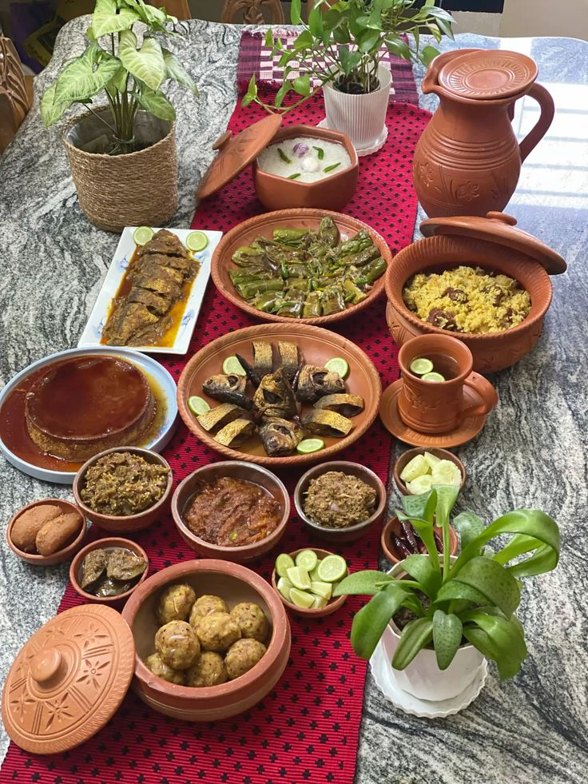
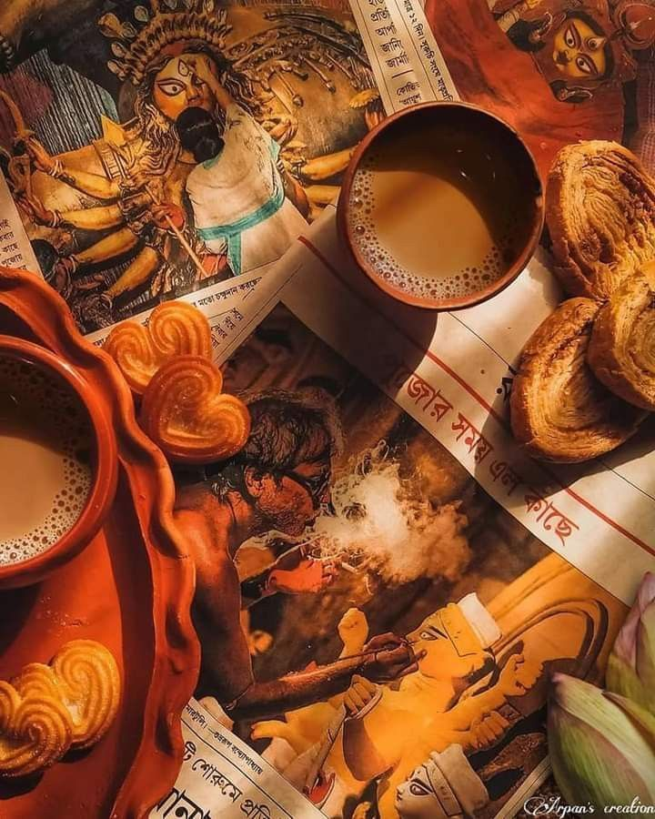

Authentic Flavours
We celebrate the distinctive flavours of Bengal through traditional dishes and familiar recipes.
Where every meal celebrates the warmth, flavours and timeless traditions of Bengal.
Discover Our Story
At Paat Pere, food is more than something we serve. It is a celebration of memories, culture and togetherness.
Inspired by the rich culinary heritage of Bengal, we bring traditional recipes and familiar flavours to your table. From comforting everyday dishes to special festive delicacies, every plate reflects the spirit of Bengali hospitality.
Our name celebrates the beautiful tradition of sitting together for a meal served on a banana leaf — a simple experience filled with warmth and connection.
Explore Our Menu →THE HEART OF BENGALI HOSPITALITY
The little things that make every Paat Pere experience special.
We celebrate the distinctive flavours of Bengal through traditional dishes and familiar recipes.
Every meal deserves care and attention. We believe in serving food prepared with dedication.
Good food tastes even better when shared. We want every guest to feel welcome at our table.
Think of the aroma of freshly cooked rice, the richness of Kosha Mangsho, the delicate flavour of Shorshe Ilish and the sweetness of Mishti Doi.
Bengali cuisine is a beautiful journey of contrasting flavours, seasonal ingredients and generations of culinary traditions. At Paat Pere, we celebrate that journey with every meal.
Explore Our Gallery
Experience the warmth and flavours of traditional Bengal at Paat Pere.
Visit Us / Contact Us